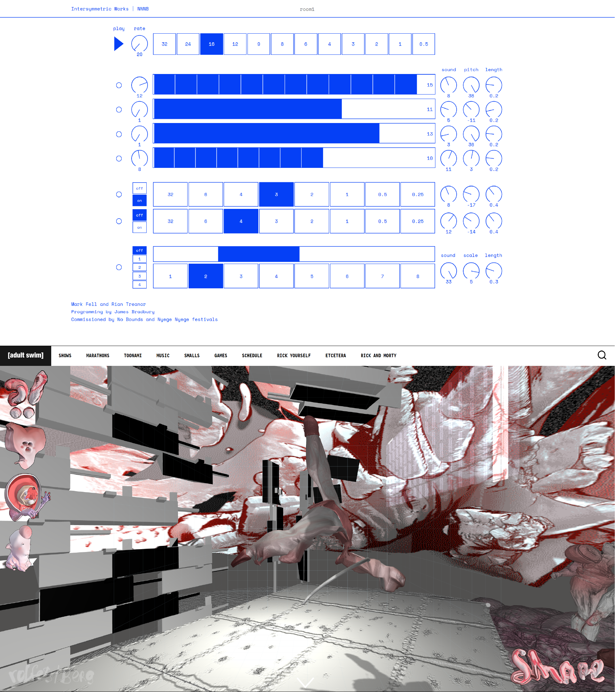
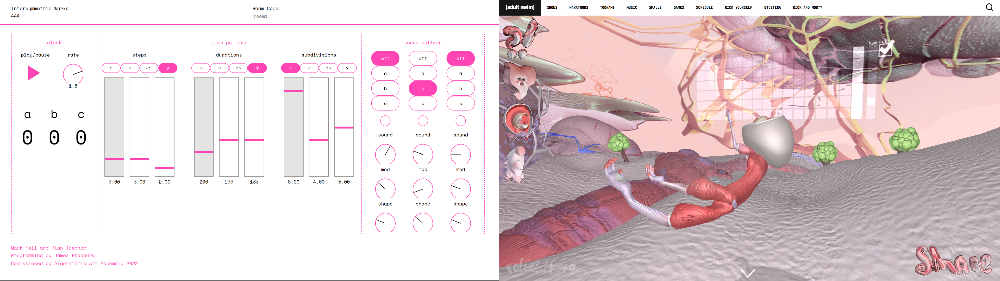

Inter-Symmetric and Limp Body Beat are extreme variations of the same idea, presenting and functioning in polar-opposite ways.
Immediately, both sites map their information completely differently. Inter-Symmetry presents the user with a minimalistic, spacious, clean interface. All tools and functions of the synthesizer are shown, with some elements even being labelled for further clarification (sound, pitch, length etc.) with a simple, readable, serif font. Because of this no-nonsense design philosophy, users immediately understand how the synthesizer functions and works. On the other hand, Limp Body Beat obscures these functions, instead placing the user’s focus on the large, flailing, gooey body on screen. The actual synthesizer is almost hidden, placed in the top left corner on an angle, semi-transparent and much smaller than the body. This effect is enhanced by the clay-like, meaty environment it’s in, which adds more visual noise to an already chaotic website. Additionally, the different “instruments” aren’t labelled as instruments. Instead, different heads are shown, depicting the different bodies that can be placed on screen. The user can only discover these features, the sounds they make and how they work after playing around. Limp Body Beat allows users to let their curiosity to guide them around the different elements of the site. This is in stark contrast to Inter-Symmetry, which instead gives the user all the information they need right from the start.
The feedback design of these websites also differ. Inter-Symmetric focuses on immediate, flat, no-nonsense feedback loop. When a button is pressed, a dial is turned, or a slide moved the music instantly changes to reflect the user’s input. On the other hand, Limp Body Beats delays audio feedback, requiring two things. First, unlike Inter-Symmetry, Limp Body Beat’s synthesizer waits to make changes to the music until the loop reaches the changes made. Second, the user needs to physically move the body to hit the notes, unlike the Inter-Symmetry’s auto-play. By using unorthodox and obtuse controls, Limp Body Beat strays from Inter-Symmetry’s straight-forward feedback loop, delaying feedback, and requiring more input and interaction from the user.
All the design choices brought up all seek to establish and reinforce the character of these sites to the user. The clean, clear, plain mapping and information design of Inter-Symmetry immediately sets the user’s expectations for what the site is. It will provide a pleasant sound, a small but hearty range of tools and a simplistic, normal experience. The same goes for the feedback loop it presents, again reinforcing the simple, no-nonsense tone the user now expects from a site that looks like Inter-Symmetry. Contrasting this, Limp Body Beat instead sets an opposite tone. With chaotic visuals, unorthodox mapping and cluttered, odd information design, the user instead expects a more unorthodox experience. This is then reinforced by the harsh sounds the synthesizer plays, and the delayed, input-reliant feedback of the website, which further establishes Limp Body Beat as a toy or “experience” as opposed to a professional or pleasant instrument like Inter-Symmetry.